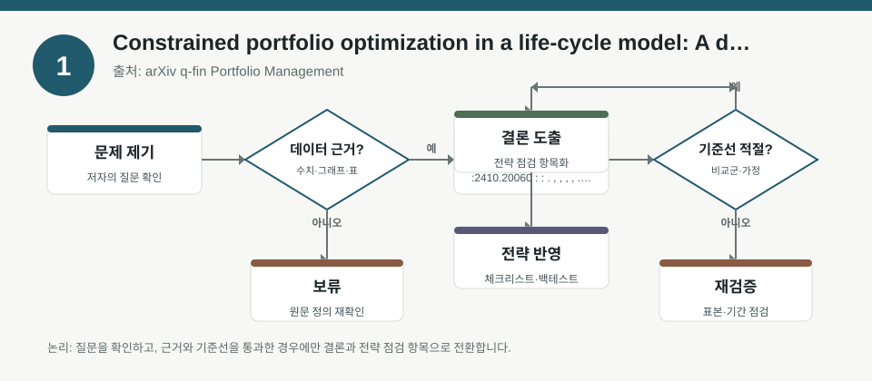
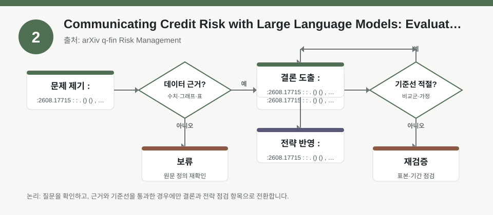
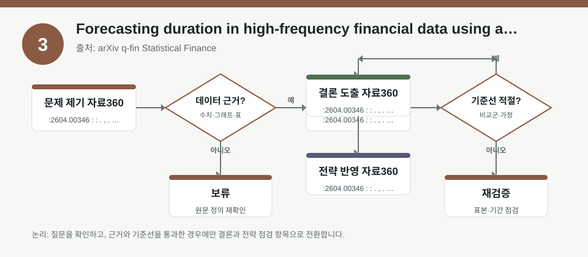

핵심 요약
- 결론: 이번 자료들은 공통적으로 “예측 정확도”보다 “가정 점검, 노출 해석, 제약 조건, 설명 가능성”이 성과 해석의 핵심이라는 점을 보여줍니다.
- 원칙: 수치가 메타데이터에 없으면 사실로 단정하지 말고, 백테스트 기간·표본·제약·설명 방식은 반드시 원문에서 재검증해야 합니다.
주목할 자료
| 번호 | 자료 | 출처 | 원문 | 핵심 내용 | 데이터 포인트 | 리스크/한계 |
|---|---|---|---|---|---|---|
| 1 | Constrained portfolio optimization in a life-cycle model: A deep pricing kernel approach | arXiv q-fin Portfolio Management | 원문 보기 | 생애주기 자산배분에서 소득 불확실성, 주식·채권·생명보험 제약을 함께 다루는 포트폴리오 최적화 연구입니다. | 제약이 있는 목표함수, 자산군 간 상호작용, 위험회피와 현금흐름 노출을 함께 해석해야 합니다. | 모형 가정, 효용함수, 생애주기 입력값, 제약식이 실제 개인 투자자 조건과 일치하는지 확인이 필요합니다. |
| 2 | Communicating Credit Risk with Large Language Models: Evaluation of Explanations from Standard and Alternative Data-Based Models | arXiv q-fin Risk Management | 원문 보기 | 신용위험 모델의 예측력뿐 아니라 설명 가능성과 규제 적합성을 함께 평가하는 연구입니다. | XGBoost, GNN, 대체데이터 기반 신용평가의 설명 품질과 의사결정 지원 적합성을 점검합니다. | 설명이 그럴듯해 보여도 인과가 아닐 수 있고, 규제·편향·데이터 품질 이슈를 별도 검증해야 합니다. |
| 3 | Forecasting duration in high-frequency financial data using a self-exciting flexible residual point process | arXiv q-fin Statistical Finance | 원문 보기 | 고빈도 주문장 이벤트의 지속시간을 자기흥분형 점과정으로 예측해 비정상적 도착 간격을 다루는 연구입니다. | 주문장 이벤트 간격, 두꺼운 꼬리 분포, 자기흥분성, 체결·변동성 구간별 민감도를 해석해야 합니다. | 고빈도 표본 외삽 위험, 미시구조 노이즈, 거래비용과 지연을 반영했는지 확인이 필요합니다. |
자료별 상세
1. Constrained portfolio optimization in a life-cycle model: A deep pricing kernel approach

- 핵심: 생애주기 투자에서는 수익률 극대화보다 소득 변동, 은퇴 시점, 사망급부 같은 제약을 함께 넣은 최적화가 중요하다는 관점을 제공합니다.
- 데이터 포인트: 주식·채권·보험의 조합이 효용, 최종자산, 위험보호 목적 사이에서 어떻게 배분되는지 확인하는 구조로 읽을 수 있습니다.
- 리스크: 실제 개인의 소득 경로, 위험회피도, 보험 조건, 거래비용이 모델 입력과 다르면 결과 해석이 달라질 수 있습니다.
- 투자전략 반영 예시: 한국 투자자는 KOSPI/KOSDAQ 비중, 채권 민감도, 원·달러 환노출, 은퇴 시점 현금흐름을 점검하는 체크리스트로 활용할 수 있습니다.
- 실행 예시: 백테스트 전에 “소득 충격 구간”, “금리 급등 구간”, “변동성 확대 구간”을 따로 나눠 제약 포함 성과가 어떻게 달라지는지 검수합니다.
2. Communicating Credit Risk with Large Language Models: Evaluation of Explanations from Standard and Alternative Data-Based Models

- 핵심: 신용위험 모델은 예측 정확도만으로 끝나지 않고, 왜 그런 판단이 나왔는지 설명할 수 있어야 규제·실무에서 사용성이 높아집니다.
- 데이터 포인트: 표준 재무데이터와 대체데이터의 조합이 신용판단에 어떻게 기여하는지, 그리고 설명 모델이 그 차이를 제대로 드러내는지가 핵심입니다.
- 리스크: 설명 요약이 인상적이어도 실제 인과관계가 아닐 수 있고, 대체데이터는 편향·결측·시점 불일치 문제가 있을 수 있습니다.
- 투자전략 반영 예시: 한국 투자자는 금융주·카드주·부동산 관련주를 볼 때 신용스프레드, 연체율, 규제 강화 가능성을 함께 보는 점검표로 연결할 수 있습니다.
- 실행 예시: 신용 이벤트 백테스트를 할 때 “설명 가능한 변수 상위 3개”가 경기둔화, 금리상승, 유동성 경색과 일관되는지 사후 검증합니다.
3. Forecasting duration in high-frequency financial data using a self-exciting flexible residual point process

- 핵심: 고빈도 시장에서는 이벤트 발생 간격이 일정하지 않기 때문에, 단순 평균 회귀보다 자기흥분성과 두꺼운 꼬리를 반영한 모델이 더 적합할 수 있습니다.
- 데이터 포인트: 주문장 지속시간과 체결 빈도는 변동성, 유동성, 체결 지연의 미시구조 신호로 해석할 수 있습니다.
- 리스크: 고빈도 결과는 표본 구간과 거래소 규칙에 매우 민감하고, 수수료·슬리피지·호가 공백이 반영되지 않으면 성과가 과대평가될 수 있습니다.
- 투자전략 반영 예시: 한국 투자자는 KOSDAQ 고변동 종목, 장초반 급등락 구간, FX 급변 시점의 체결 리스크를 따로 점검하는 습관을 둘 수 있습니다.
- 실행 예시: 백테스트 로그에서 이벤트 간격이 짧아지는 구간과 거래비용이 급등하는 구간을 분리해 성과와 체결 가능성을 함께 기록합니다.
팩터·리스크·포트폴리오 관점
- 핵심: 세 자료 모두 팩터 노출을 “수익원”이 아니라 “제약과 리스크의 함수”로 해석해야 한다는 공통점을 갖습니다.
- 핵심: 생애주기 제약, 신용설명 가능성, 고빈도 미시구조는 각각 금리, 신용, 유동성 리스크를 다른 시간축에서 드러냅니다.
- 검수: 백테스트에서는 거래비용, 샘플 편향, 설명 변수 누수, 제약조건의 현실성, 그리고 KOSPI/KOSDAQ·환율·금리 민감도 분해를 함께 확인해야 합니다.
정리
- 결론: 이번 자료는 “맞히는 모델”보다 “검증 가능한 모델”이 더 중요하다는 점을 한국 투자자 관점에서 다시 보여줍니다.
- 다음 확인: 원문에서 표본 기간, 제약 조건, 거래비용 반영 여부, 설명 변수 정의를 먼저 확인한 뒤 해석하는 절차가 필요합니다.